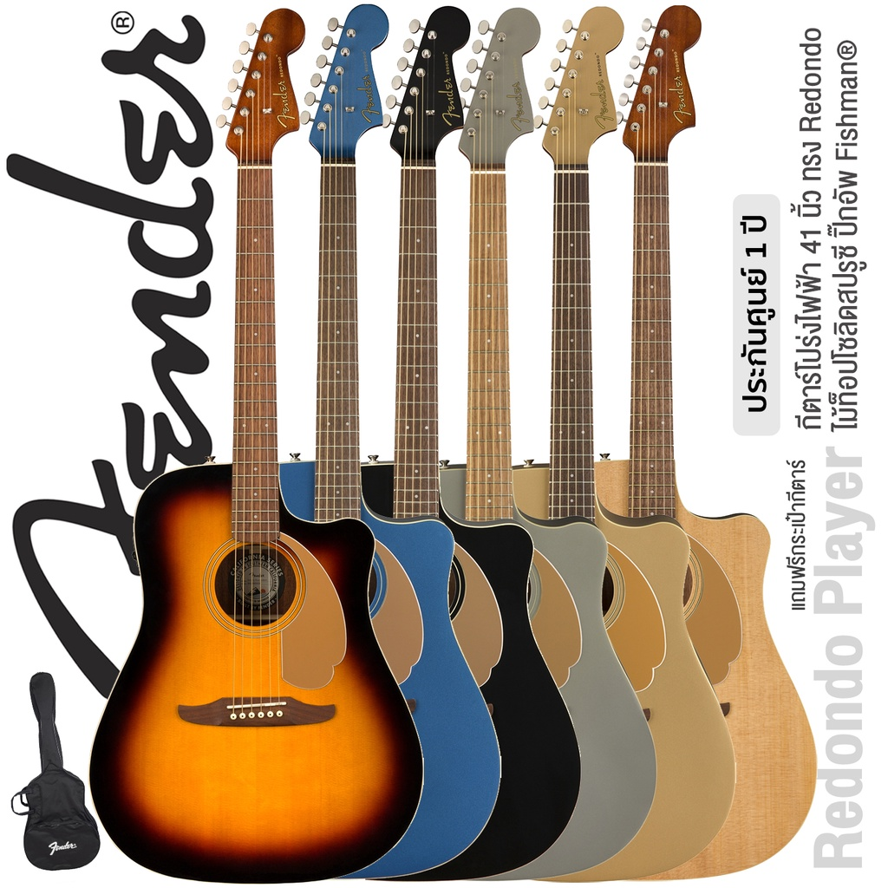

|  | กีตาร์ (Guitar) เป็นเครื่องดนตรีชนิดหนึ่ง จัดเป็นพวกเครื่องสาย มักจะเล่นด้วยนิ้วมือซ้าย และดีดด้วยนิ้วมือขวาหรือใช้ปิ๊กดีดกีตาร์ เสียงของกีตาร์นั้นเกิดจากการสั่นสะเทือนของสาย ทำให้เกิดกำทอน (resonance) แก่ตัวกีตาร์และคอกีตาร์ กีตาร์นั้น มีทั้งแบบกีตาร์อะคูสติก และกีตาร์ไฟฟ้า บางตัวก็เป็นได้ทั้งสองอย่าง กีตาร์มีส่วนตัวเป็นกล่องกำทอน ซึ่งในกีตาร์อะคูสติกจะเจาะเป็นช่อง ส่วนกีตาร์ไฟฟ้ามักจะตัน และมีโพรงในส่วนคอกีตาร์ โดยทั่วไปแล้วส่วนหัวของกีตาร์จะยืดขึ้นไปจากคอ เพื่อใส่ลูกบิดหมุนสายสำหรับปรับเสียง กีตาร์เป็นเครื่องดนตรีที่นิยมใช้แพร่หลายและใช้กับดนตรีหลากหลายสไตล์ นับเป็นเครื่องดนตรีที่นิยมใช้บรรเลงเดี่ยวอย่างกว้างขวางที่พบเห็นมากที่สุดคือกีตาร์คลาสสิก และยังเป็นเครื่องดนตรีหลักในวงดนตรีประเภทบลูส์ และดนตรีร็อกอีกด้วย กีตาร์สามารถเล่นในยามว่าง หรือ เป็นงานอดิเรก ได้ดี ปกติกีตาร์จะมี 6 สาย แต่แบบ 4- 7- 8- 10- 12- สายก็มีเช่นกัน |
|---|---|
ประวัติของกีต้าร์ |
เครื่องดนตรีที่มีลักษณะคล้ายกีตาร์เป็นที่นิยมมากว่า 5,000 ปีเป็นอย่างต่ำ โดยเริ่มเป็นที่นิยมในแถบเอเชียกลาง เรียกว่าซิตารา (Sitara) เครื่องดนตรีที่มีรูปแบบคล้ายคลึงกีตาร์ที่เก่าแก่ที่สุดที่ค้นพบมีอายุ 3,300 ปี เป็นหินสลักของกวีอาณาจักรโบราณฮิตไตต์ คำว่ากีตาร์มาจากภาษาสเปนคำว่า guitarra ซึ่งมาจากภาษากรีกอีกทีคือคำว่า Kithara จากหลายแหล่งที่มาทำให้คำว่ากีตาร์น่าจะมีรากศัพท์มาจากภาษาตระกูลอินโดยูโรเปียน guit- คล้ายกับภาษาสันสกฤต ที่แปลว่า ดนตรี และ -tar หมายถึง คอร์ด หรือ สาย คำว่า qitara เป็นภาษาอาหรับ ใช้เรียก Lute lute ส่วนคำว่า guitarra เกิดขึ้นเมื่อเครื่องดนตรีชนิดนี้ถูกนำมาที่คาบสมุทรไอบีเรียโดย ชาวมัวร์ กีตาร์ในยุคปัจจุบัน มาจากเครื่องดนตรีที่เรียกว่า cithara ของชาวโรมัน ซึ่งนำเข้าไปแพร่หลายในอาณาจักรฮิสปาเนีย หรือสเปนโบราณ ประมาณ ค.ศ. 40 จากนั้นเปลี่ยนแปลงรูปแบบจนกลายมาเป็น เครื่องดนตรีที่มี 4 สายเรียกว่า อูด (oud) นำเข้ามาโดยชาวมัวร์ในยุคที่เข้ามาครอบครองคาบสมุทรไอบีเรีย ในศตวรรษที่ 8 ส่วนในยุโรปมีเครื่องดนตรีที่เรียกว่า ลุต (lute) ของชาวสแกนดิเนเวียมี 6 สาย ในสมัย ค.ศ. 800 เป็นเครื่องดนตรีที่ได้รับความนิยมในกลุ่มชาว (ไวกิง) ค.ศ. 1200 กีตาร์ 4 สาย มี 2 ประเภท คือ กิตาร์ราโมริสกา หรือกีตาร์ของชาวมัวร์ มีลักษณะกลม ตัวคอกว้าง มีหลายรู กับกิตาร์ราลาตินา ซึ่งรูปร่างคล้ายกีตาร์ในปัจจุบัน คือมีรูเดียวและคอแคบ ในศตวรรษที่ 16 เครื่องดนตรีคล้ายกีตาร์ของชาวสเปน ที่เรียกว่าบิอูเอลา เป็นเครื่องดนตรีที่มีลักษณะใกล้เคียงกับกีตาร์ในปัจจุบัน มีความผสมผสานระหว่างเครื่องดนตรีอูดของชาวอาหรับและลูตของยุโรป แต่ได้รับความนิยมในช่วงสั้น ๆ พบเห็นจนถึง ค.ศ. 1576 เครื่องดนตรีชิ้นแรกที่มีรูปลักษณ์เหมือนกีตาร์ในปัจจุบัน เกิดในช่วงยุคปลายของสมัยกลางหรือยุคต้นสมัยฟื้นฟูศิลปวิทยา เป็นช่วงที่มีการใช้เครื่องดนตรีประเภทเครื่องสายกันทั่วโลก ในยุคนั้นกีตาร์มีทั้งแบบ 4 และ 5 สาย สำหรับกีตาร์ที่มี 6 สาย ระบุว่ามีขึ้นใน ค.ศ. 1779 เป็นผลงานของกาเอตาโน วีนัชชา (Gaetano Vinaccia) ในเมืองเนเปิล อิตาลี แต่ก็ถกเถียงกันว่าอาจเป็นของปลอมสำหรับตระกูลวินาซเซียมีชื่อเสียงในการผลิตแมนโดลินมาก่อน กีตาร์ไฟฟ้าตัวแรกเริ่มผลิตขึ้นในศตวรรษที่ 20 โดยจอร์จ โบแชมป์ (George Beauchamp) ได้รับสิทธิบัตรใน ค.ศ. 1936 และร่วมกับริกเค่นแบ็กเกอร์ (Rickenbacker) ตั้งบริษัท Electro String Instrument ผลิตกีตาร์ไฟฟ้าในปลายคริสต์ทศวรรษ 1930 ต่อมาในคริสต์ทศวรรษ 1960 จอห์น เลนนอน สมาชิกวงเดอะบีทเทิลส์ใช้กีตาร์ยี่ห้อนี้ ส่งผลให้เครื่องดนตรียี่ห้อนี้มีชื่อเสียงในกลุ่มนักดนตรีในยุคนั้น และในปัจจุบันบริษัทริกเค่นแบ็กเกอร์ เป็นบริษัทผลิตกีตาร์ที่ใหญ่ที่สุดในสหรัฐอเมริกา |
ประเภทของกีต้าร์ |
1.Acoustic guitars 2.Renaissance and Baroque guitars 3. Classical guitars 4.Flat-top guitars 5.Archtop guitars 6.Resonator, resophonic or Dobros 7.Twelve-string guitars 8. Acoustic bass guitars 9. Electric guitars 10.Seven-string and eight-string guitars 11.Bass guitars |
ด.ญ.สฤษฏาภา มงคล เลขที่12 ป.6/5 ผู้จัดทำ |